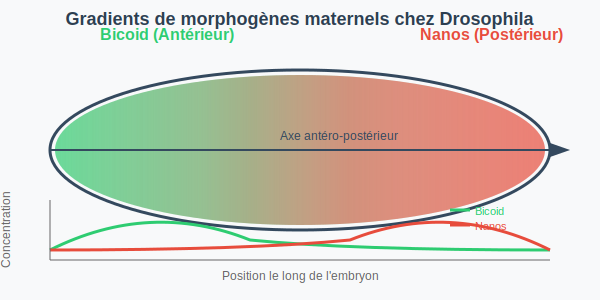

1. Rappel de l'embryogenèse comparée
Ce premier chapitre présente les grandes étapes du développement précoce chez trois modèles : amphibiens, échinodermes et arthropodes.


2. Contrôle génétique par les morphogènes maternels
Les produits géniques d'origine maternelle créent des gradients de morphogènes (ex. Bicoid et Nanos chez Drosophila) qui établissent les axes corporels.
Vidéo : Animation Bicoid/Nanos (5 min)
3. Gènes de segmentation zygotiques
Les gènes zygotiques se succèdent en cascade : gènes de la polarité, paires-règles, segmentaires. Leur expression est détectable par hybridation in situ.